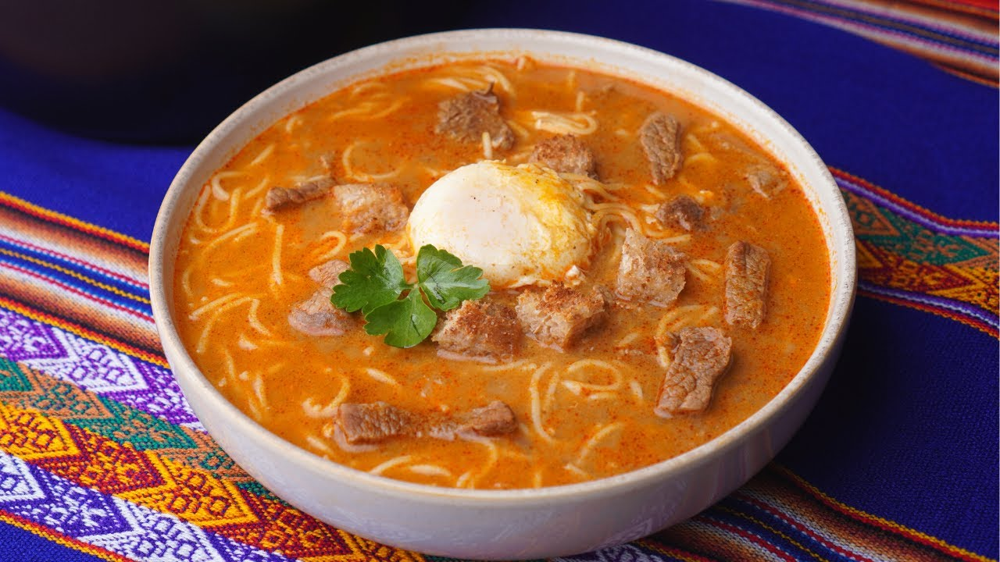

Sopa a la minuta Recipe

How To Make Peruvian Sopa A La Minuta
Sopa a la minuta is a comforting Peruvian “minute soup” made from a clear chicken broth simmered with tender chicken pieces, thin noodles (fideos), diced vegetables like carrots and potatoes, and fresh cilantro. Just before serving, a beaten egg is drizzled in to create delicate egg ribbons.
Ingredients
- 1 russet potato, peeled and diced into 1/4-inch cubes
- 1 large bay leaf
- 1 large yellow onion, finely diced
- 2 garlic cloves, minced
- 2 stalks celery, finely diced
- 2 medium carrots, finely diced
- 6 cups beef broth
- 1/2 pound lean ground beef (preferably 85/15)
- 1/4 teaspoon kosher salt, plus more to taste
- Freshly ground black pepper, to taste
- 1/4 pound spaghetti, broken into 4 pieces
Steps
- Rinse the diced potatoes, drain, and then place in a large bowl with enough cool water to cover. Set aside until ready to use.
- Heat olive oil in a large pot over medium heat. Add the bay leaf, onion and a pinch of salt. Cook for about 7 minutes, stirring often, until the onions soften.
- Stir garlic into the softened onions and cook for a minute until fragrant. Now add the celery, carrots, and drained potatoes to the pot. Stir to combine and cook for about 5 to 10 minutes until the vegetables have softened slightly and the potatoes are partially cooked.
- Now add all the broth to the pot and crank up the heat to high. Cover the pot and bring to a boil. When it comes to a boil, reduce the heat to medium and uncover the pot.
- In a bowl, combine the ground beef with 1/4 teaspoon salt and a few grinds of black pepper. Now pinch off pea-sized bits of ground beef and add to the soup.
- Add the spaghetti and stir to combine. Reduce the heat to low, cover, and simmer until the noodles are cooked to your liking. The longer you let the noodles simmer in the broth, the more liquid they soak up and the softer they become. I like them this way, but some people prefer the noodles al dente. It’s your choice.
- Ladle into bowls to serve.
Homepage